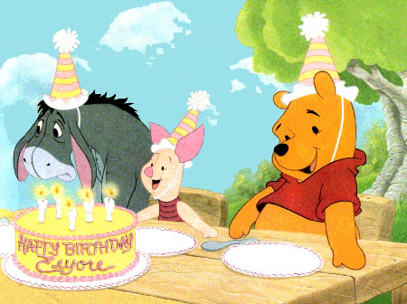

Milý Tome,
Protože máš právě dnes své dvacátétřetí narozeniny, ráda bych ti popřála a napsala pár řádek o tom, co pro mě znamenáš. Nejprve mi ale dovol vysvětlit, na co se to vlastně díváš. Před týdnem jsem se začala učit "programovat" a tohle je můj první, takový lehce interaktivní pokus. Nenajdeš tu tedy jen tyto řádky, ale i něco dalšího, co tě možná (snad) mile překvapí. Musím se také zmínit, že s nejtěžší částí kódu mi pomohl Arnie a že i on se snažil, aby se ti tenhle mini projekt líbil (říkám teď všemu projekt, zní to cool). Nicméně, stále se to ještě učím, tak omluv drobné chyby a užij si obsah, co to jen půjde!
Tak tedy. Přeji ti všechno nejlepší k narozeninám. Přeji ti štěstí a lásku, úspěhy a krásné zážitky, odvahu, optimismus, pevná přátelství, naději, sny, dobrodružství, jistotu, oporu, alkohol a ijáčky, bakaláře, dlouhé spaní, žádné nemoci, hodně procházek s Beníkem, peníze, dobroty, bystrost, krásné dárky, vášeň, žádné kocoviny, porozumnění, hvězdné nebe, žádný stres, pevný charakter, sluné dny, vítězství, pokoru, rodinou pohodu, šílené akce a literární inspiraci.
Jsi jeden z mých nejlepších kamarádů a nejbližších lidí v mém životě. Známe se už tak krásně dlouho a naše přátelství si už vyzkoušelo všechny možné stádia. Navzájem jsme se štvali, třeba se i hádali, pak spolu hrozně kamarádili, psali si každý den, lehce se ignorovali, navštěvovali se, jezdili na různá místa busem, málem se poblinkali, hráli heroes, jedli hranolky nebo seděli na balkoně a rozjímali při vodní dýmce. Už se známe. Jen tak se navzájem nepřekvapíme a jen tak se taky neodradíme od našeho přátelství. Věřím, moc pevně věří, že budeme kamarádi celej život.
Mám tě ráda, protože jsi to ty. Jsi Tom a já si už neumím představit, že bych tě neznala. Odjela jsem do Švédska, přemýšlela že bych tu zůstala celé dva roky, dodělala si školu ale nikdy - nikdy mě nenapadlo, že bych tebe a Ijáčky už nikdy neměla vidět. To není možnost. Moc ráda vzpomínám na všechno, co jsme spolu zažili (na vyjmenovávání akcí jsi tu expert ty :). Moc si vážím všech těch chvil, kdy jsi mi pomohl. Vážím si tebe jako člověka, jako ijáčka! Přinášiš do naší party něco jedinečného. Tvoje nápady, tak kreativní a občas šílené, z nás dělají co jsme.
Během posledních let jsi se neskutečně změnil a zapracoval na sobě. Obdivuju tě, co všechno si dokázal a dokazuješ. Jakou máš trpělivost, jak dokážeš čelit nepříjemným věcem, jak se staráš o ostatní, jak jsi zespolečenštěl, jaká je s tebou sranda, jak dokážeš dát najevo emoce. Taky ti to teď strašně sluší! :) Pevně věřím, že jdeš cestou ke svému osudu, že od teď už budeš jen šťastný, protože si to zasloužíš.
Až dočteš všechen text, pokračuj kliknutím zde